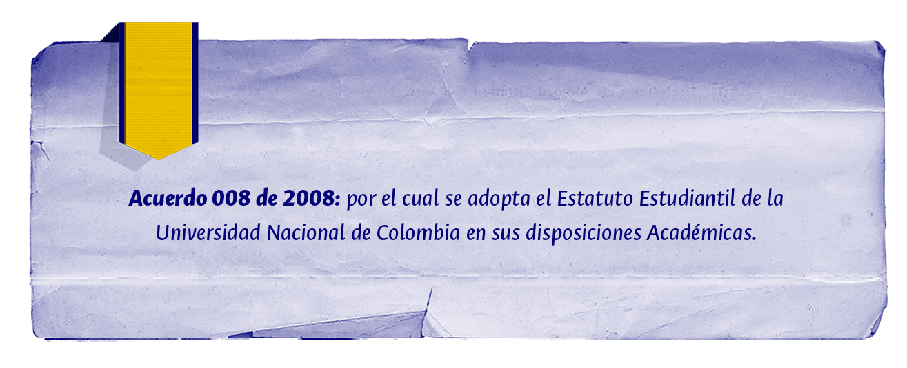

En este acuerdo se define el crédito, así:
Artículo 5. Asignatura. Una asignatura es un conjunto de actividades de trabajo académico organizadas por uno o varios docentes con propósitos formativos, en torno a una temática y/o problemática específica que se desarrolla a partir de la relación entre estudiantes y profesores. La asignatura será evaluada y valorada con una calificación.
Parágrafo 1. Las asignaturas deberán especificarse según su nombre, objetivos, contenido básico, metodología, forma de evaluación y créditos. Las asignaturas serán propuestas al Consejo de Facultad por los Directores de Área Curricular.
Artículo 6. Créditos Académicos. La Universidad adopta un régimen de créditos académicos para promover una mayor flexibilidad en la formación universitaria, así como para facilitar la homologación y la movilidad entre programas curriculares nacionales e internacionales. Un crédito es la unidad que mide el tiempo que el estudiante requiere para cumplir a cabalidad los objetivos de formación de cada asignatura y equivale a 48 horas de trabajo del estudiante. Éste incluirá las actividades presenciales que se desarrollan en las aulas con el profesor, las actividades con orientación docente realizadas fuera de las aulas y las actividades autónomas llevadas a cabo por el estudiante, además de prácticas, preparación de exámenes y todas aquellas que sean necesarias para alcanzar las metas de aprendizaje. El número de horas presenciales depende de la asignatura y la metodología empleada.
Artículo 7. Cálculo de Créditos Académicos. En atención a la flexibilidad y la especificidad del programa curricular, el número total de créditos académicos de un programa curricular se obtiene multiplicando el número total de horas semanales de trabajo académico del estudiante para un periodo académico de 16 semanas; el número de créditos debe estimarse tomando como base una mínimo de 40 horas semanales (8 horas diarias por 5 días) o un máximo de 54 horas semanales (9 horas diarias por 6 días); este valor se multiplica por el total de semanas de duración del programa curricular y el resultado se divide entre 48.
Parágrafo 1. Aquellos programas curriculares con asignaturas que requieran una duración mayor que las 16 semanas del periodo académico (como clínicas, prácticas académicas, salidas de campo, pasantías, tesis u otras actividades académicas que demandan una mayor dedicación de tiempo del estudiante), podrán calcular el número de créditos de la asignatura teniendo en cuenta hasta 25 semanas por semestre.
Parágrafo 2. Cursos específicos de menor duración al semestre académico, organizados con invitados nacionales o internacionales, podrán calcularse en créditos académicos como parte del plan de estudios del estudiante.
En esta normativa el concepto de crédito se utiliza de manera reiterada para determinar asuntos como: las asignaturas se miden en créditos; cada estudiante dispone de un cupo de créditos para inscribir asignaturas; se establece el número mínimo de créditos a matricular por periodo académico, así como los créditos adicionales que podrían ser matriculados; se definen los créditos cursados, los créditos aprobados y los créditos de homologación o convalidación, así como que el promedio de las asignaturas se calcula con base en los créditos.